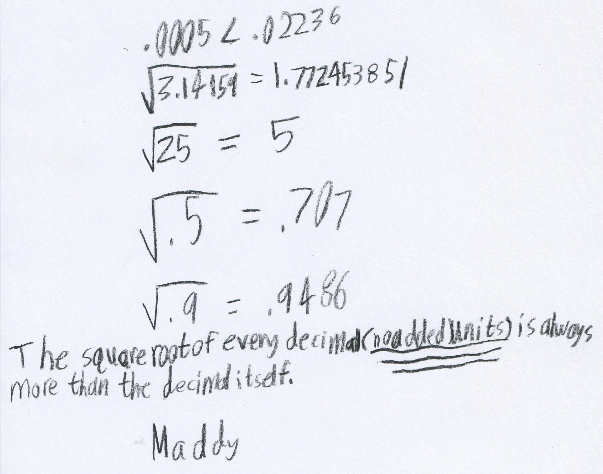

Maddy, a 4th grader, finds out about square roots
This discussion between Don and Maddy started with a cartoon, in which "the square root of .0005" came up. Maddy did the following:

By "no added units" Maddy meant numbers that are less than 1.
Fine job, Maddy!!